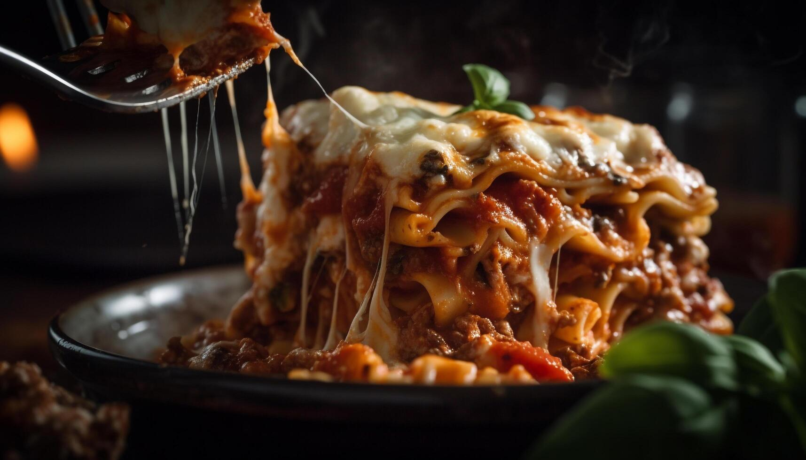

Lasagna recipe

Description
A truly delightful meal, this classic lasagna has layers of savory and hearty ingredients. Its sauce comprises a rich combination of sweet Italian sausage, lean ground beef, and aromatic onions, garlic, and herbs, stewed together in a crushed tomato and tomato sauce and paste blend to realize robust flavors. Inclusive also are fennel seeds, Italian seasoning, and a bit of sugar that counterbalance the acidity, creating a deep, satisfying sauce. and Parmesan for an extravagant finish.
Cooked layers of lasagna are united with a creamy ricotta and egg blend, mozzarella cheese, and Parmesan for an extravagant finish. This dish is hearty, perfect for family gatherings or a cozy dinner.
Recipe source: Allrecipes
Ingredients
- 450g sweet Italian sausage
- 120g minced onion
- 2 cloves garlic, crushed
- 800g crushed tomatoes (1 can)
- 2 x 185g cans canned tomato sauce
- 2 x 170g cans tomato paste
- 120ml water
- 25g white sugar (approximately 2 tablespoons)
- 4 tablespoons chopped fresh parsley (approximately 15g)
- 1 and a half teaspoons dried basil leaves (approximately 1.5g)
- 1 and a half teaspoons salt, divided, or to taste (approximately 7.5g)
- 1 teaspoon Italian seasoning (approximately 1g)
- Half a teaspoon fennel seeds (approximately 0.5g)
- One fourth teaspoon ground black pepper (approximately 0.25g)
- 12 lasagna noodles (you may want to use a standard pack, usually about 250g)
- 450g ricotta cheese
- 1 egg
- 340g mozzarella cheese, sliced
- 75g grated Parmesan cheese
Steps
- Gather all your ingredients.
- Cook sausage, ground beef, onion, and garlic in a Dutch oven over medium heat until well browned.
- Stir in curshed tomatoes, tomato sauce, tomato paste, and water. Season with sugar, 2 tablespoons parsley, basil, 1 teaspoon salt, Italian seasoning, fennel seeds, and pepper. Simmer, covered, for about 1 and a half hours, stirring occasionally.
- Bring a large pot of lightly salted water to a boil. Cook lasagna noodles in boiling water for 8 to 10 minutes. Drain noodles, and rinse with cold water.
- In a mixing bowl, combine ricotta cheese with egg, remaining 2 tablespoons parsley, and 1/2 teaspoon salt.
- Preheat the oven to 190 degrees C (375 degrees F).
- To assemble, spread 1 and a half cups of meat sauce in the bottom of a 23 cm x 33 cm baking dish. Arrange 6 noodles lengthwise over meat sauce, overlapping slightly. Spread with 1/2 of the ricotta cheese mixture. Top with 1/3 of the mozzarella cheese slices. Spoon 1 and a half cups meat sauce over mozzarella, and sprinkle with 1/4 cup Parmesan cheese.
- Repeat layers, and top with remaining mozzarella and Parmesan cheese. Cover with foil: to prevent sticking, either spray foil with cooking spray or make sure the foil does not touch the cheese.
- Bake in the preheated oven for 25 minutes. Remove the foil and bake for an additional 25 minutes.
- Rest lasagna for 15 minutes before serving.
Home